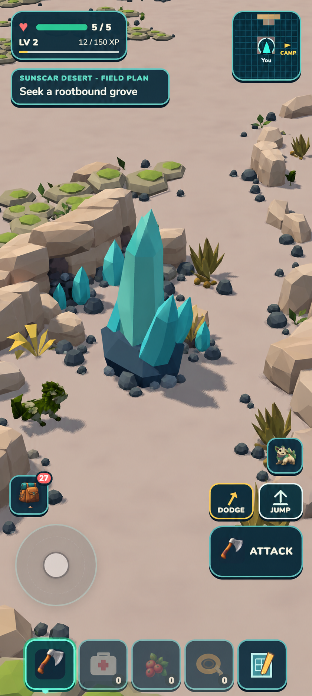
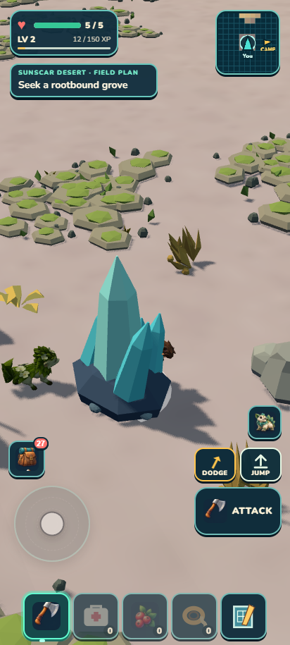
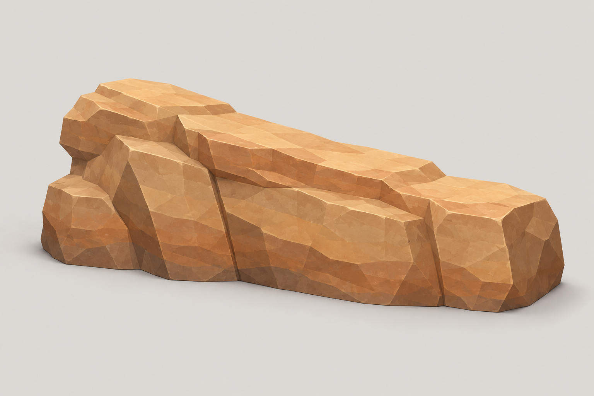
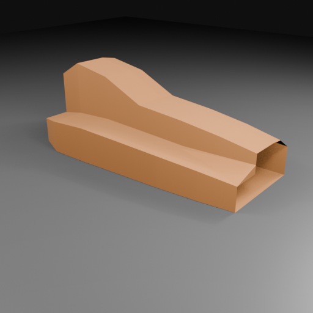
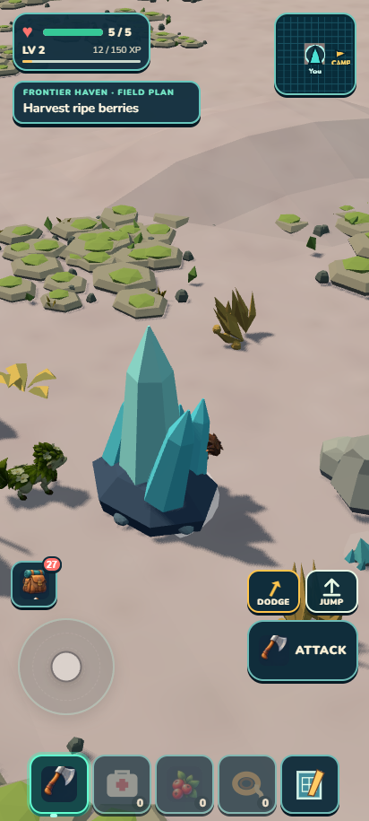
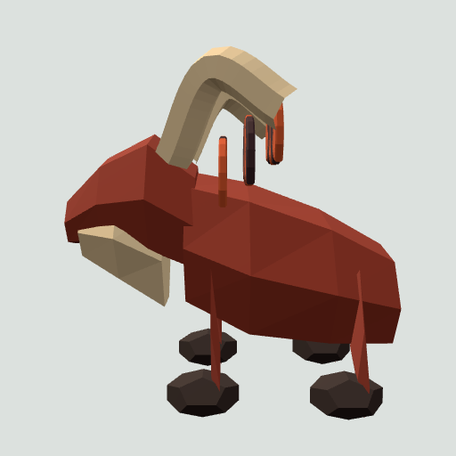
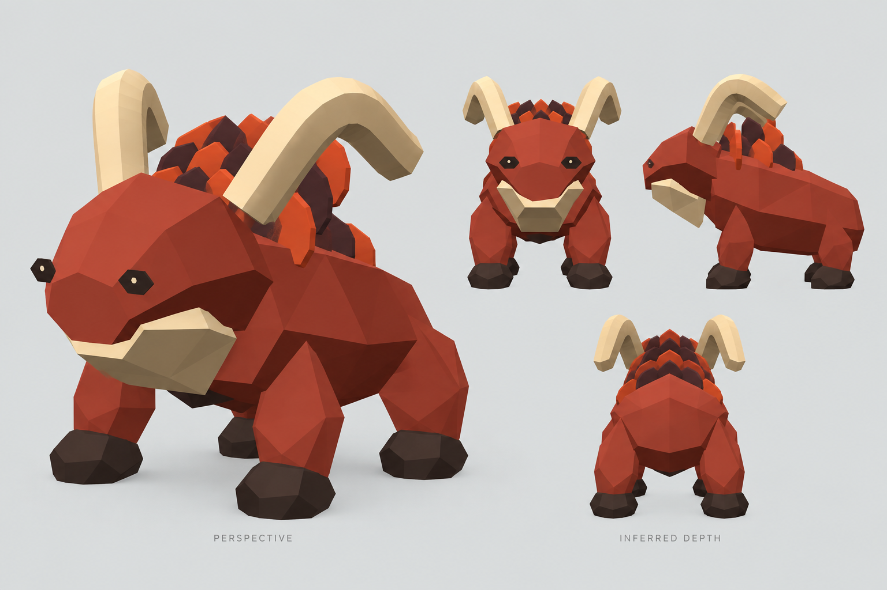
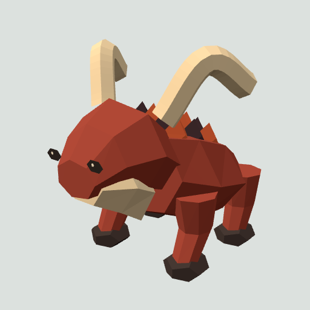

CONTINUOUS ROTATION · LOCAL CHECKPOINT · NO PUSH
A useful desert circuit and a sturdier Emberhorn.
Sunscar's cleanup removes eleven repeated trail-stone decorations and one solid wetland monolith. The local outing now has a proved healthy return, but the habitat still lacks its intended mineral rooms: independent visual review remains 2.9/10 HOLD. Emberhorn's separate measured anatomy loop reaches 8.1/10 visual PASS, with ordinary portrait encounter proof.

Generated Sunscar direction — not implementation evidence
Actual frozen destination before cleanupActual retained destination — still visually incompleteFour minutes through the mineral pockets
The ordinary-control circuit reached all18 stops in 4m2s over363.3m, with four walking detours, full health on return, eight collected crystal shards and three fiber. The route skirts the territorial Emberhorn on both sides. The iron approach was out of range and receives no reward credit. Complete progress, inventory and ecology match after literal reload. A diagnostic local start avoids claiming a two-kilometre Camp commute; coordinates guide the walking keys, so this is not unaided human navigation.
The original baseline lost two health on its return shortcut. A later route runner stopped against an existing rock beside the northern crystal; its corrected west approach and north bypass are preserved separately. Neither failure was fixed by changing player movement or removing a gameplay resource.
What was held

Generated clean weathered-rib construction target
Actual R2 Blender massing — incorrect cap appearance, held
Temporary render-mesh lip preview — held, not integratedThe first rock became a roof-like wedge; its stepped repair had incorrect end caps. The final third attempt stopped at a cap winding/coverage audit before rendering, so there is no R3 render, export or asset admission. A precise temporary terrain-mesh preview then read as an isolated berm rather than a crystal pocket. It was rejected without changing terrain source or collision. This visit closes with its honest art debt.
The removed Fen stone does not leave an invisible collider: ordinary movement crossed its former footprint, and leaving/returning did not restore it. All other allocated scenery records retain their order and transforms, including synchronous/incremental parity and alternate worlds. Terrain, resources, wildlife homes, placement and other protected owners are unchanged.
Emberhorn: measurements made the difference

Actual old side view — nearly flat legs and floating mane pages
Generated and independently reviewed species direction
Actual retained R3 — volumetric bent legs and compact crestA separate builder implemented an independently reviewed literal geometry plan. The first candidate fixed the legs but made a bar-like mane. The second tapered the bars but buried the crest. Forty-five rays against the actual torso triangles then set the final exposed height above the skin. R3 keeps the original horns, body, hooves, eyes and materials; six other species and thirteen unchanged Emberhorn components compare exactly. It has1302 triangles and32 meshes, inside the original envelope. The more regular angular crest remains a minor difference from the target.
Ordinary approach produced roam, warning, chase, windup, lunge and recovery; retreat returned the creature toward home. Health fell5→3 during the charge and remained3 on retreat. The independent runtime reviewer retained R3. No taming, ability, utility, rig or gameplay rule changed; the evidence does not claim new species behavior.
Workflow changes retained
Planning now requires the full walking polyline and actual interaction reach. Modeling plans store checked executable coordinates, inspect the rendered triangulation, distinguish BVH candidates from confirmed intersections, and measure closure images before studio work. For geometry attached to an existing body, actual surface hits and visible clearance replace guessed body heights. Each habitat continues to receive its own packet, actual baselines, two to four high-quality targets and independent selection.
Checkpoint proof and next visit
1,422 tests, verify and ZIP pass. ZIP 20.60MiB; unpacked 44.44MiB. Developer and portable original earned Camp, plus portable desert continuation, compare exactly with no observed console errors or external requests. Private isolated save copies protected the user's browser storage. These are phone-viewport browser checks, not physical-phone performance measurements.
Ironspine's dedicated planning and two reviewed target directions are ready. Its ordinary baseline ascent and mirrored descent took4m33s with full health and exact reload; source work awaits full asset/camera feasibility. The continuous goal advances there, with Cinderjaw anatomy planning in parallel. No push.
Try it in play
- In Sunscar, approach the first crystal pocket until the harvest halo appears. Collect the loose shards, then take the western side of the Emberhorn's open basin.
- At the northern pocket, gather the low fiber and approach the crystal from its west side. Return around the north of the adjacent ordinary rock, then keep east of the creature's home on the way south.
- Return to the first pocket and reopen the game. Supplies and harvested sources should persist; invisible blockers, restored supplies or missing rewards are failure signs.
- For Emberhorn's appearance, watch from its open basin, approach to trigger a warning, and give it space. If you remain close it charges. The legs and crest should remain attached through the movement; retreat should let it return home.
Measured checkpoint · Habitat judgment · Emberhorn visual judgment · Runtime review